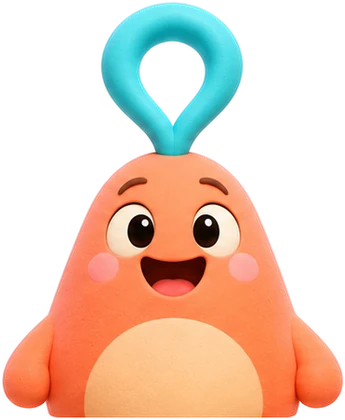
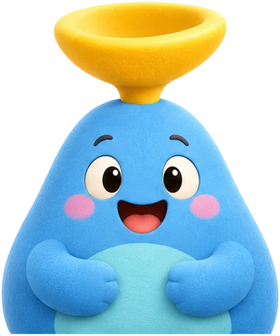
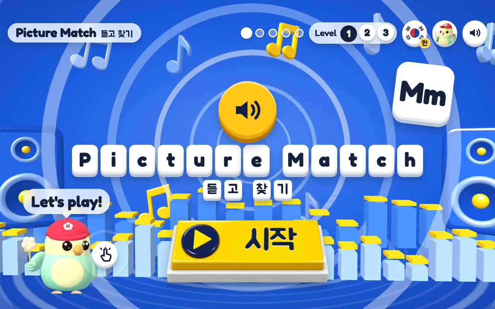

듣고, 따라 하고, 몸으로
‘m… m… m…’ 배를 문지르며 소리를 내고, 챈트로 리듬을 익혀요. 5세는 귀와 몸으로 먼저 배웁니다.
Why Phonics
‘에이, 비, 씨’ 이름만 외워서는 단어를 읽을 수 없어요. 파닉스는 글자마다 어떤 소리가 나는지 익혀, 처음 보는 단어도 스스로 소리 내어 읽게 하는 방법입니다.

‘m… m… m…’ 배를 문지르며 소리를 내고, 챈트로 리듬을 익혀요. 5세는 귀와 몸으로 먼저 배웁니다.

우리말 습관 때문에 m을 ‘므’처럼 읽기 쉬워요. 입술을 다문 채 ‘음~’으로 끝내는 연습까지 수업 안내에 담았습니다.
/m/ → milk, mug → ‘Pour the milk in the mug.’ 배운 소리가 바로 단어와 문장으로 이어져요.
Curriculum
Level K는 6개 Unit, 30개 레슨입니다. Unit마다 다섯 소리를 배우고, 단모음으로 묶어 단어 읽기의 기초를 다집니다.
지금 보고 있는 과정 · 5세 Level K — 입학 첫 레슨은 Lesson 1 · Mm입니다.
입학 첫 소리는 m. milk, mug, moon, mop… 그림 단어 18개와 함께 시작해요.
Z를 배우고 짧은 모음 다섯 개를 다시 모아 본 뒤, 긴 모음으로 넘어가요. 1년을 마치면 6세 Level A로 이어집니다.
Lesson Flow
Lesson 1 · Mm 수업을 예로 들었어요. 동그란 버튼을 눌러 단계별로 살펴보세요.
milk, mug, moon… 오늘 만날 단어를 그림 게임으로 먼저 익혀요.
Picture Match · 듣고 찾기
알파벳송과 ‘m m m · m m milk’ 챈트로 소리와 리듬을 몸에 익혀요.
Sound Chant 4단계
‘Pour the milk in the mug.’ 라임을 읽고, /m/ 소리를 글자 M·m과 연결해요.
Learn and Say · Say It
/m/로 시작하는 그림을 고르고, 4선 위에 Mm을 따라 써요.
Sound Sort · Trace and Write
배운 단어가 게임 속에 나와요. 듣고 고르고, 소리 내어 말하며 복습해요.
Toy Catch · Puzzle · Croco
배운 소리를 혼자 읽어 보며(Fluency Check) 레슨을 마무리해요.
Fluency Check


소리가 읽기로 자라는 길
Try Lesson 1
교재 첫 레슨 활동을 그대로 옮겼어요. 소리는 모두 교재 공식 녹음입니다. 아이와 함께 눌러 보세요.
입술을 꼭 다물고, 배를 문지르며 ‘mmm~’
‘므’처럼 모음을 붙이지 않는 게 포인트예요.
그림을 누르면 단어를 들려줘요. /m/로 시작하는 그림 4개를 찾아보세요.
Pour the in the .
FAQ
Level K는 읽기를 서두르는 과정이 아니에요. 노래와 동작, 그림으로 소리를 먼저 듣고 말하는 데서 시작해, 한 레슨에 한 소리씩 천천히 쌓아 갑니다.
Lesson 1을 예로 들면 소리 인식(5분) → 소리와 글자 잇기(10분) → 소리 분류(5분) 순서로 교재 활동을 하고, 따라 쓰기와 노래, G-Learning 게임이 이어집니다.
이 페이지의 챈트를 아이와 함께 따라 불러 주세요. /m/처럼 입을 다무는 소리는 ‘므’가 아니라 ‘음~’으로 끝나게 들려주면 좋아요.
태블릿이나 PC의 크롬·사파리에서 가로 화면으로 하면 가장 잘 보여요. 말하기가 있는 게임은 마이크 허용이 필요해요.
Level K 다음은 6세 Level A, 7세 Level B로 이어져요. Level A부터는 소리 → 단어 → 문장 → 이야기 4단계로 읽기를 넓혀 갑니다.